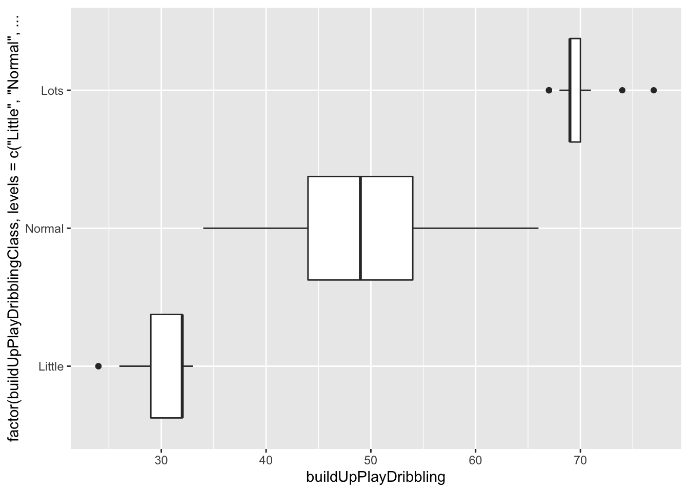
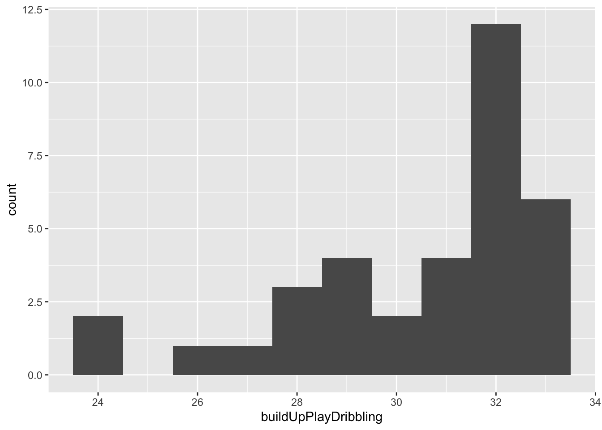
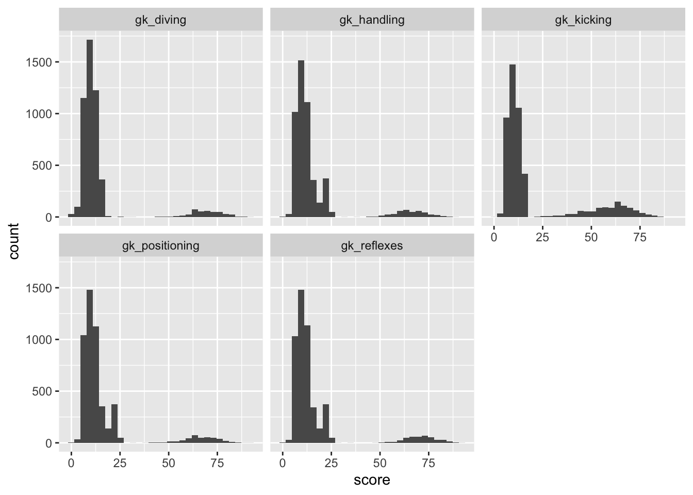
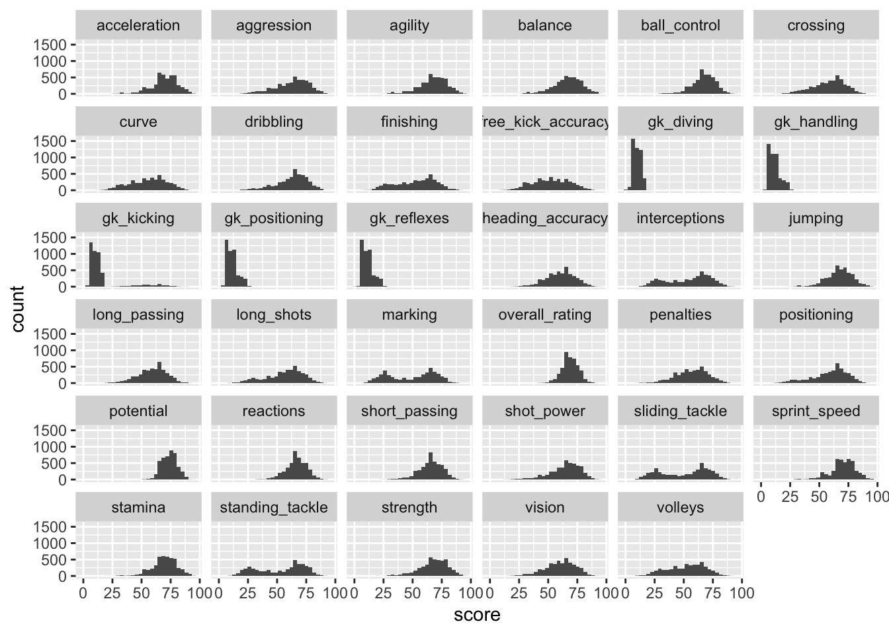
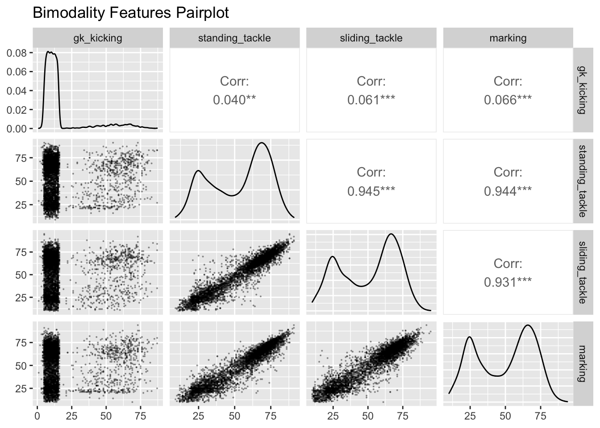
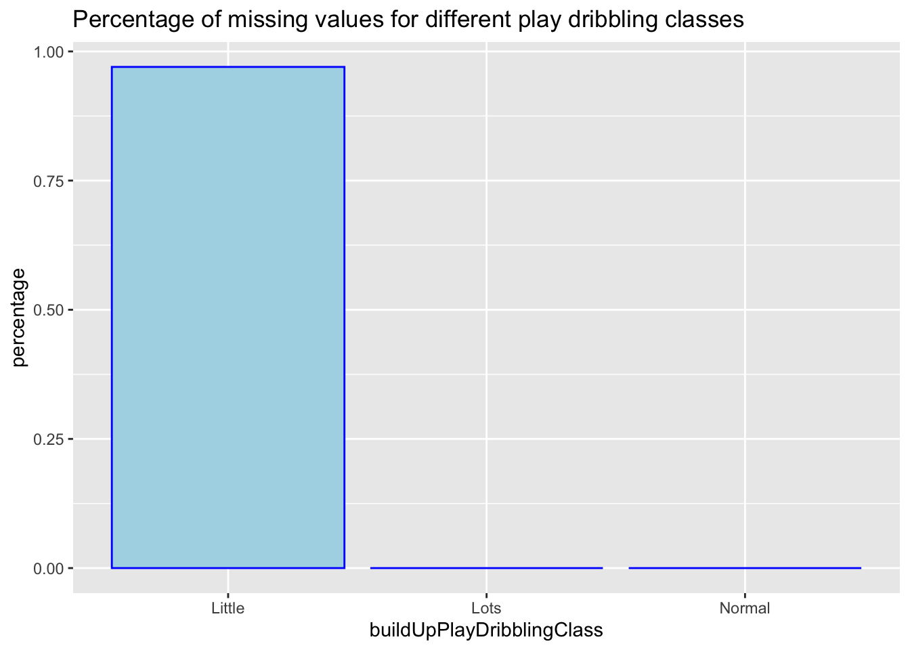

Chapter 3 Data transformation
The data from https://www.football-data.co.uk/data.php can be directly downloaded in csv format.
We crawled the data from https://sofifa.com into json format with web crawler based on requests package and parsel package in python. We further transform the json into csv format as the raw data. The crawler is attached in the github repo.
3.1 Player Attributes
There are 183978 players in this dataframe and only about 3000 rows contain NA values. Therefore, directly dropping NA variables is feasible. After that, we sample 5000 of them for a convenient plot.
3.1.1 Filtering goalkeepers
We firstly check the normality of each column

We firstly notice that for features starting with the characters “gk”, there is a significant deviance to normality. It is obviously because the goalkeepers are significantly better than other football players in these attributes. Since there is no information about whether one player is in charge of saving the goal. We decided to implement K-means clustering to classify them. We will not elaborate the specific ways to solve the problem since the project focuses on EDA. Before we implement this, we take a look at the histograms of “gk” features:

It is easy to notice that for these features, there are two clusters and probably the higher score is for goalkeepers and the lower score is for other players.

We notice that except gk_kicking, all clusters clearly separated the supposed goalkeepers and other players. We surmise that there are some players who are not goalkeepers playing well in kicking. Further research needs conducting on the types of these players.
We can verify the justification of this clustering by simply looking at the count of goalkeepers and non-goalkeepers. In one sample, we found the total number of non-goalkeepers are 4596 and goalkeepers are 404. The ratio is 11.38. Notice that there are one goalkeeper with 10 other football players in the match so the theoretical ratio should be 10, which is close to 11.38.
3.1.2 Filtering guards
We then take a look at the histograms for non-goalkeepers.

From the histograms, we notice that four attributes contain bimodality. Those are ‘gk_kicking’, ‘standing_tackle’, ‘sliding_tackle’ and ‘marking’. We then make a scatter matrices for these four data.

We realize that the last three features containing a high positive correlation. With bimodality and strong correlation, another clustering could be built. We feel that the clusters with higher score could be from the guards (or defenders).
 The clustering shows it separates guard and other players.
We can verify the justification of this clustering by simply looking at the count of guards and non-guards. In one sample, we found the total number of non-guards are 2687 and guards are 1909. The ratio is 1.41. Notice that usually the formation of the team are “4-6” like (e.g. 4-4-2, 4-2-3-1, 4-3-3) so the theoretical ratio should be 1.5, while 1.41 is close to this ratio.
## # A tibble: 2 x 2
## guard counts
## <dbl> <int>
## 1 0 201
## 2 1 1813.2 Team attributes
From missing data part we notice that the feature “buildUpPlayDribbling” contains NA values when “buildUpPlayDribblingClass” is little. Firstly we need to separately view the boxplot of “buildUpPlayDribbling” by “buildUpPlayDribblingClass”

So different classes have different scores. Because we need to fill NA value in the Little class, we only draw the histogram of little class and we see that

The result of shapiro test shows the p value is 0.0001525 so we would like to fill the NA value by the maximum likelihood estimation of the normal distribution (i.e. mean).